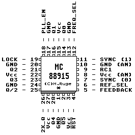

Previous
Next
TOC
Der MC88915 Low skew CMOS
Phase locked loop clock driver

Der MC88915 besitzt 5 Ausgänge (Q0 bis Q4) mit einer Drift von
kleiner 500 Picosekunden gegenüber dem SYNC Eingang.
Der Teiler für die Eingang- bzw. Ausgangssignal ist auf 1 zu 2,
1 zu 1 oder auf 2 zu 1 einstellbar.
Die Eingangsfrequenz reicht von 5 Megaherz bis zu 2X_Q FMAX specs,
das heißt (2X_Q maximal 160 Megaherz in der MC88915FN160 Version).
Alle Ausgänge können +-35 Milliampere an CMOS oder TTL Lasten trei-
ben, die Eingänge sind TTL kompatibel.
Verwendung findet der MC88915 zum Beispiel bei den 68040 und 68060
CPUs von Motorola. Aus einem Takt von 16 MHz beispielsweise lassen
sich so recht einfach die benötigten Taktfrequenzen von 16 und 32MHz
für den Bustakt und den CPU Takt (BCLK und PCLK) gewinnen die dann
auch gleich die richtigen Parameter für einen sicheren Betrieb der
angeschlossenen CPU aufweisen.
Der MC88915 Low skew CMOS phase-locked loop clock driver